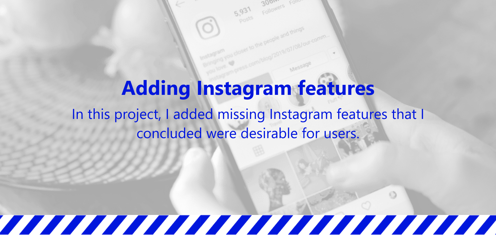
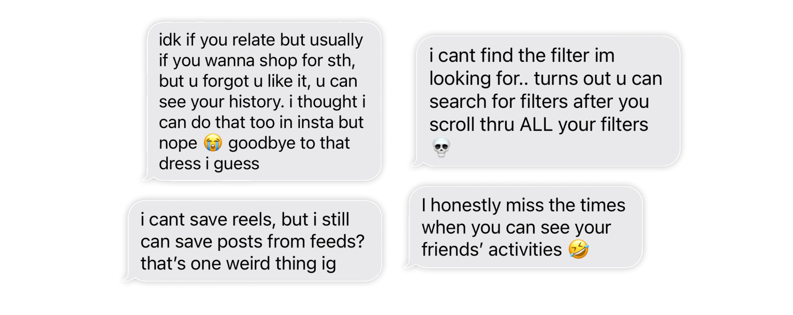
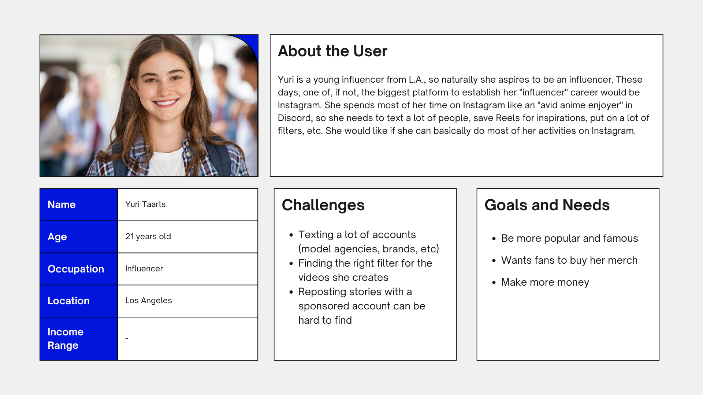
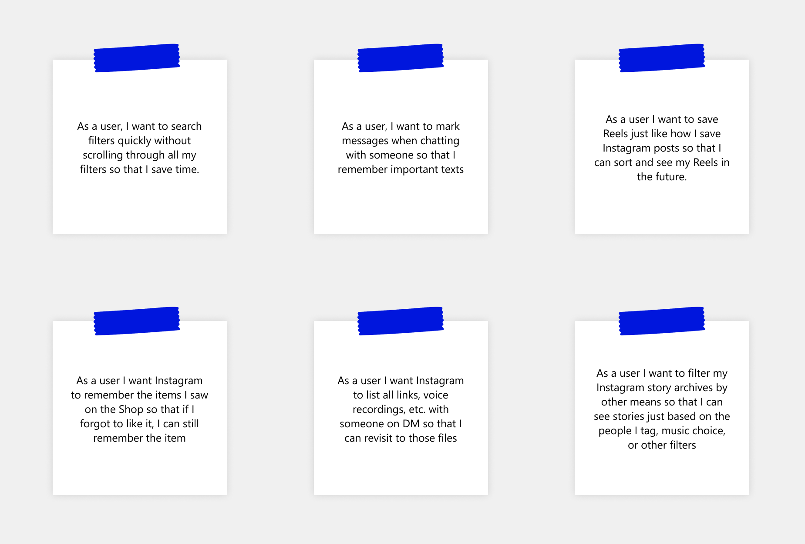
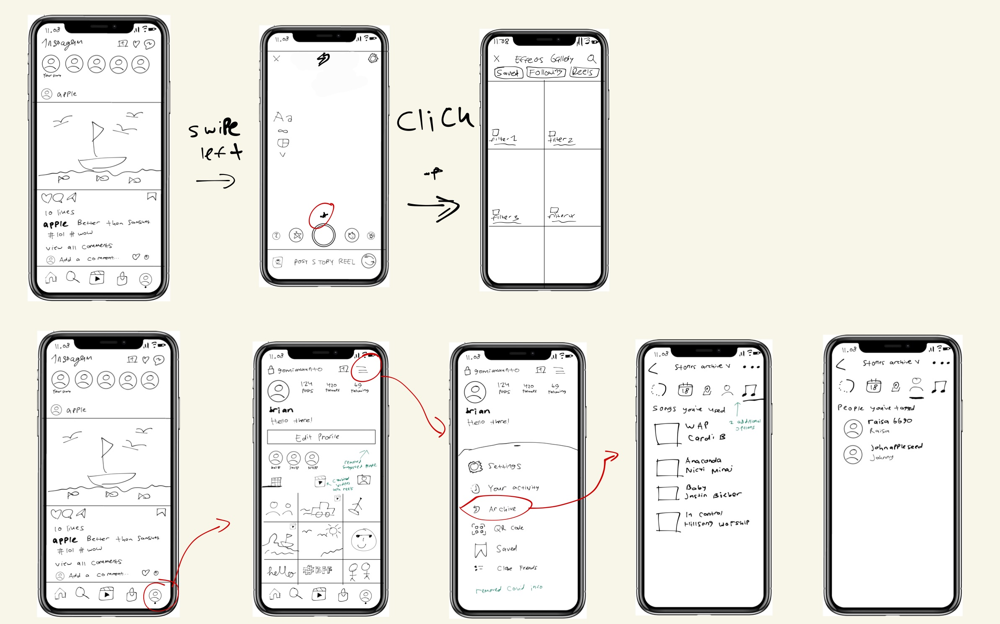
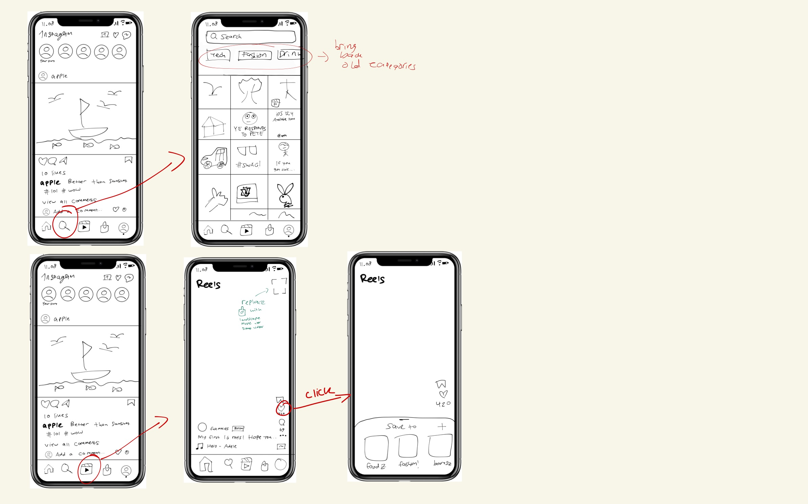
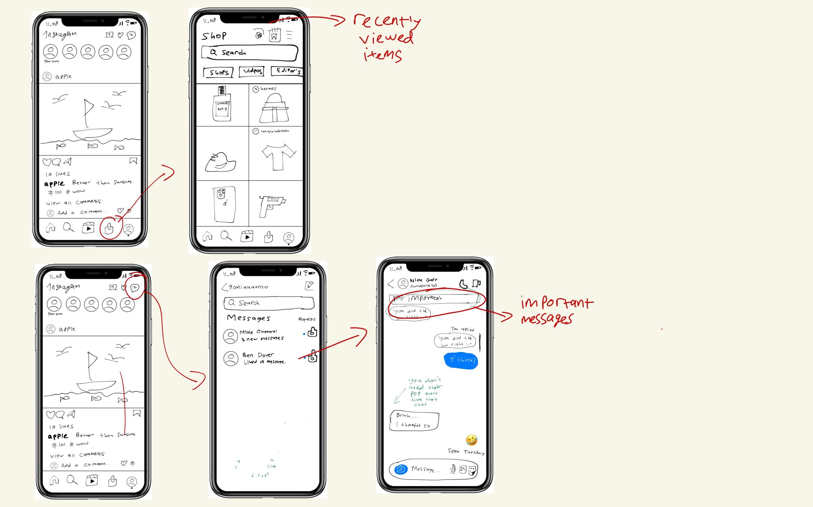
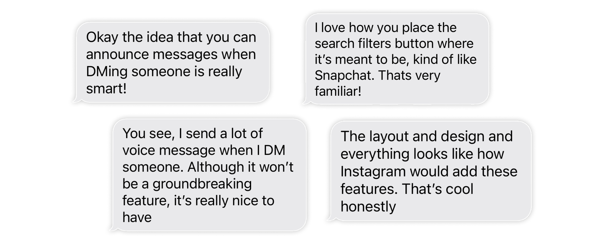

Background
Let's be honest... you probably have Instagram (yes you, the one reading this). But you're probably not as addicted to it as I am (I hope so at least). How can I not be, since I get to see memes, news, and my friends all in the same app? It's like a super app.
However, the issue with a super app is like the saying "Jack of all trades, master of none". Since Instagram is packed with features, I feel that they can't really focus on one specific feature on the app. You also have to consider the fact that Instagram have tried to introduce new features (for example IGTV) after researching, and yet the concept never worked and it was taken off the app.
Therefore, as a really avid user of Instagram and as a UI UX designer and researcher, I feel the need to add some features in Instagram that might be useful to me and others. My research question is:
What features would be nice to have in Instagram that will enhance user experience?
User Complaints
To know what I should add, I need to first know the complaints Instagram users have. I asked a few Gen Z and Millennials on this matter (the age group that uses Instagram the most), and here are some of their answers.

I got some feedbacks from users, from old features and complaints. However, I cannot add some features like seeing friends activities (Following Activity) in the ❤ tab because Instagram purposelly removed that feature years ago (it's basically a stalking feature).
Finding Inspirations
After knowing what the users' complaints are, I started to look for inspirations from other popular apps, since a lot of Instagram's features are inspired by many apps. Because these apps are used by a lot of users, adding features from their apps may increase users' familiarity.
Here are some of the examples:

Persona
I created a persona to represent the majority of Instagram users in 2023. This is so that I have a realistic representations of your Instagram's audience segments for reference.

User Stories
I then summed up the features that Instagram should add/fix from a user's perspective so that I can make sense and realise the users' wants. These user stories are created based on the persona and other prior research above.

Wireframe
After knowing the features to add, I then drew some sketches on how the features are going to look like in Instagram's real app. This is so I can visualise the layout and flow of the prototype that I will create.



Prototype
After designing the low-fidelity prototype of Instagram through wireframing, I created the prototype to showcase and realise my added features. This is my last iteration of the design.
User Testing & Feedback
I asked 10 Millennials and Gen Zs to try out my prototype in Figma, asking them to do the features listed in my user stories, observe the error rate and completion rate, etc. I conducted this test using the Think Aloud Interview method, where the testers use my prototype while saying their thoughts out loud about the app I made.
In summary, the testers stated that the placement of the features looks seamless, and they realised the importance of the features I added.

Conclusion
As we can see from above, the impacts to the users are as such:
Users can now search for filters easily instead of having to scroll through all their filters (very useful for narcissists)
Users can now announce / alert important messages in their DM.
Users can sort through the links they've sent to each other & voice recordings.
Users can now look for popular categories in the 🔍 tab.
Users can finally save Reels just like they do for normal Instagram posts.
Users can now rediscover the items they saw in case they forgot to save or like the item in Instagram Shop.
When you go to Profile, click the Hamburger Icon, and click Archive, users can sort through their Instagram Stories by music choice or people tagged (not just date or location).
Speaking of archiving, users can now also archive their chat instead of just deleting their chat with someone.
In conclusion, I added a lot of features that I concluded a lot of Instagram users would use in their daily lives. I answered the users' complaints and feedbacks and successfully realised it by researching and designing for them, and got positive feedbacks. Safe to say, I have answered my research question.